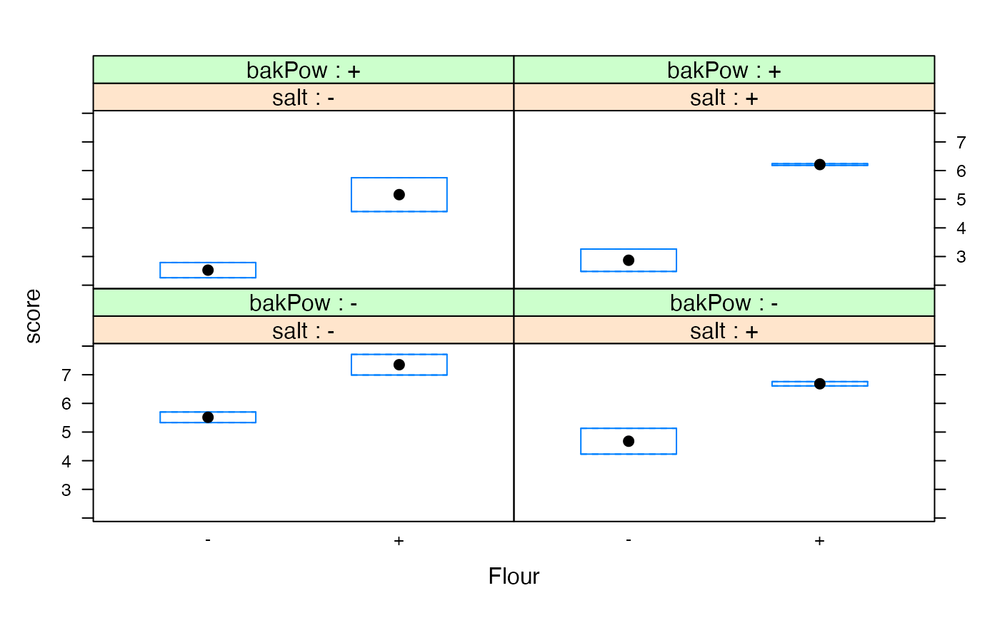

Experimental data for the scores given to a set of pizza doughs.
data(ss.data.doe1)A data frame with 16 observations on the following 6 variables.
replReplication id
flourLevel of flour in the recipe (- +)
saltLevel of salt in the recipe (- +)
bakPowLevel of Baking Powder in the recipe (- +)
scoreScored assigned to the recipe
ordRandomized order
See references.
This data set is used in chapter 11 of the book ``Six Sigma with R'' (see References).
Cano, Emilio L., Moguerza, Javier M. and Redchuk, Andrés. 2012.
Six Sigma with R. Statistical Engineering for Process
Improvement, Use R!, vol. 36. Springer, New York.
https://link.springer.com/book/10.1007/978-1-4614-3652-2/.
data(ss.data.doe1)
summary(ss.data.doe1)
#> repl flour salt bakPow score ord
#> Min. :1.0 -:8 -:8 -:8 Min. :2.260 Min. :1.00
#> 1st Qu.:1.0 +:8 +:8 +:8 1st Qu.:3.987 1st Qu.:2.75
#> Median :1.5 Median :5.515 Median :4.50
#> Mean :1.5 Mean :5.124 Mean :4.50
#> 3rd Qu.:2.0 3rd Qu.:6.332 3rd Qu.:6.25
#> Max. :2.0 Max. :7.710 Max. :8.00
lattice::bwplot(score ~ flour | salt + bakPow ,
data = ss.data.doe1,
xlab = "Flour",
strip = function(..., style) lattice::strip.default(..., strip.names=c(TRUE,TRUE)))
